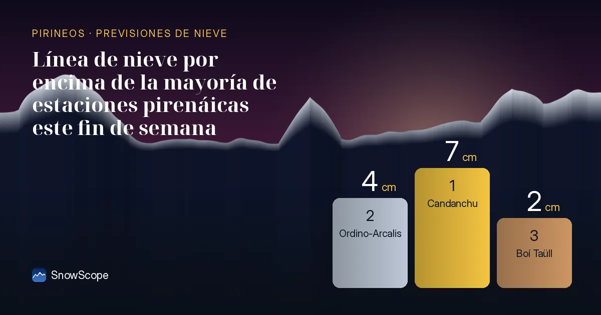

Línea de nieve por encima de la mayoría de estaciones pirenáicas este fin de semana
El nivel de congelación se mantiene muy por encima de la base de la mayoría de estaciones pirenaicas hasta el sábado, con lluvia cayendo sobre el manto nivoso existente en cotas más bajas. Solo a partir del domingo bajará lo suficiente para que la mayoría de la cordillera vea nieve de forma consistente.
Consulta la previsión de nieve en tiempo real de Boí Taüll en la app SnowScopeEspesor de nieve, alertas de nieve polvo y mapa 3D, gratis.
Dónde se sitúa el límite entre lluvia y nieve
El nivel de 0 °C (la altura donde la temperatura del aire cruza la congelación) oscila entre 2 140 m el viernes y 1 740 m el sábado en los Pirineos. En la parte más cálida de cada día, la línea de nieve real se sitúa aproximadamente 300 m por debajo—es decir, alrededor de 1 840 m el viernes y 1 440 m el sábado. Esto significa que lluvia cae sobre el manto nivoso existente en estaciones por debajo de esas cotas.
Candanchú afronta el riesgo más claro: nieve en las pistas y lluvia cayendo sobre ella tanto el viernes como el sábado. En Boí Taüll, la línea de nieve sube por encima de la cota más alta de la estación (2 747 m) solo el viernes. Ordino-Arcalís, Pal-Arinsal y Peyragudes se mantienen por encima de la línea de nieve durante todo el período de predicción, así que cualquier nueva precipitación llega en forma de lluvia en todas las elevaciones.
| Estación | Espesor de nieve | Nieve nueva, 72 h | Previsto, próximos días | Cota máx. |
|---|---|---|---|---|
| Boí Taüll | 2 cm | 6 cm | 14 cm | 2747 m |
| Ordino-Arcalis | 4 cm | 7 cm | 9 cm | 2626 m |
| Pal-Arinsal | 2 cm | 4 cm | 8 cm | 2494 m |
| Peyragudes | 0 cm | 2 cm | 9 cm | 2360 m |
| Candanchu | 7 cm | 7 cm | 20 cm | 2238 m |

Qué ocurre después del sábado
El domingo trae un cambio brusco. El nivel de congelación baja a 1 640 m en las secciones del norte, con la línea de nieve asentándose alrededor de 1 340 m. Para entonces, 32 de las 53 estaciones de la cordillera deberían ver cobertura de nieve, en comparación con 25 hoy. La cobertura de nieve en toda la región se prevé que casi se duplique, de 1 090 km² a 2 510 km² el domingo por la tarde.
El patrón se estabiliza entonces: el lunes el nivel de congelación sube de nuevo a 2 650 m, pero para entonces las estaciones de gran altitud habrán acumulado nieve fresca de los días anteriores.

Qué significan los números para tu pista
Candanchú lidera la predicción con 20 cm de nieve nueva esperada durante los próximos días, en parte porque se sitúa lo bastante bajo para captar nieve el domingo y lunes. Boí Taüll y Ordino-Arcalís ganará aproximadamente 14 y 9 cm respectivamente. Los tres siguen siendo poco profundos—Candanchú hoy tiene solo 7 cm en las pistas superiores—así que el recubrimiento escaso y las rocas expuestas siguen siendo peligros.
El modelo de satélite muestra una división clara este fin de semana: los picos altos ganan nieve apropiada para la altitud, mientras que las laderas de media montaña sufren condiciones de lluvia sobre nieve que unirán capas y añadirán peso a la base existente. El domingo, toda la cordillera pasa a modo de acumulación de nieve seca.
Consejos para esquiadores
- Viernes y sábado: mantente por encima de 2 500 m si quieres nieve seca; lluvia sobre nieve en cotas más bajas ablandará las condiciones de la superficie e incrementará el riesgo de estabilidad de laderas.
- Candanchú afronta lluvia sobre nieve el viernes y sábado; consulta el boletín oficial de aludes antes de esquiar fuera de pista.
- Domingo en adelante: línea de nieve baja alrededor de 1 340 m; toda la cordillera se vuelve esquiable en nieve por primera vez en días.
- Espera una refundición rápida por las noches en elevaciones altas a partir del domingo, creando costras duras a primera hora de la mañana que se ablandan durante el día.
- La acumulación total durante el período de predicción alcanza su máximo en Candanchú (20 cm) y Baqueira-Beret (14 cm); estos ofrecerán el mejor riding una vez que la transición termine.
Sobre estas cifras
Los espesores de nieve de las estaciones son la nieve más profunda en las pistas altas según el modelo de nieve de SnowScope (unos 1 km, cálculo del 20 de noviembre); son estimaciones para una zona, no una medida en un punto. Los valores de las estaciones de medida son medidas en la fecha indicada. Las previsiones pueden cambiar. Consulta siempre el boletín oficial de aludes antes de salir fuera de pista.
Boletines oficiales de aludes: Météo-France / Meteocat / AEMET
Citar este informe
Para investigación, docencia o prensa: cifras y gráficos reutilizables libremente bajo CC BY 4.0 con esta cita.
SnowScope (2026), Línea de nieve por encima de la mayoría de estaciones pirenáicas este fin de semana, https://snowscope.app/blog/es/2026/11/pyrenees-freezing-level-snow-line-20-november-2026.html, consultado el 2026-11-20
SnowScope (Atlas Labs). (2026, November 20). Línea de nieve por encima de la mayoría de estaciones pirenáicas este fin de semana. SnowScope snow reports. https://snowscope.app/blog/es/2026/11/pyrenees-freezing-level-snow-line-20-november-2026.html
BibTeX
@misc{snowscope2026pyreneesfreezinglevelsno,
author = {{SnowScope (Atlas Labs)}},
title = {Línea de nieve por encima de la mayoría de estaciones pirenáicas este fin de semana},
year = {2026},
month = nov,
howpublished = {\url{https://snowscope.app/blog/es/2026/11/pyrenees-freezing-level-snow-line-20-november-2026.html}},
note = {Published 2026-11-21 12:44 UTC; accessed 2026-11-20}
}· CC BY 4.0 · Métodos, datos y herramientas →
Boí Taüll: nieve y temperatura según la altura, este invierno vs el pasado (herramientas) →
Sigue Boí Taüll
Gratis: un aviso cuando llega la nieve y la previsión cada mañana.
Más partes de nieve

El nivel de congelación alcanza 3400m–3600m durante los próximos tres días, trayendo lluvia al manto de nieve del 09 al 11 de noviembre. Previsión del 08 de noviembre.

A menudo se vende Grandvalira como una opción económica para esquiar en diciembre, pero la nieve natural en la base promedia solo 9 cm en nuestros inviernos pasados.

¿Planeas un viaje en diciembre a Baqueira Beret? Mira nuestro historial de nieve, precios de forfaits desde 70,00 € para un pase de 1 día, y cómo se compara con Astún-Candanchú.